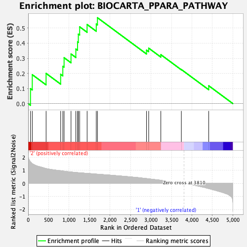
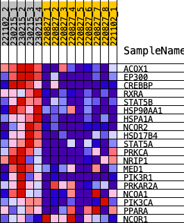
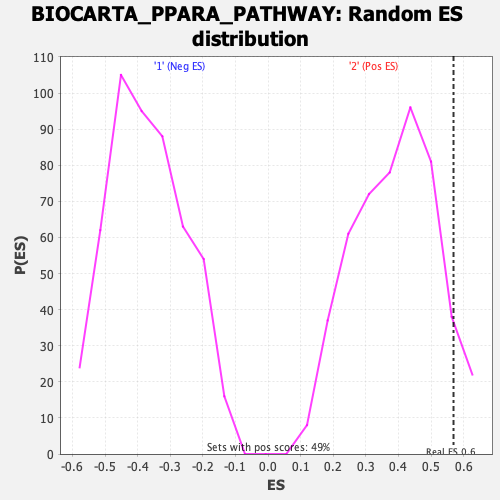

| | | Dataset | norm_counts_forGSEA.Phenotype.cls#2_versus_1.Phenotype.cls#2_versus_1_repos |
| Phenotype | Phenotype.cls#2_versus_1_repos |
| Upregulated in class | 2 |
| GeneSet | BIOCARTA_PPARA_PATHWAY |
| Enrichment Score (ES) | 0.5689184 |
| Normalized Enrichment Score (NES) | 1.4632584 |
| Nominal p-value | 0.060851928 |
| FDR q-value | 1.0 |
| FWER p-Value | 0.659 |
Table: GSEA Results Summary

Fig 1: Enrichment plot: BIOCARTA_PPARA_PATHWAY
Profile of the Running ES Score & Positions of GeneSet Members on the Rank Ordered List

Fig 2: BIOCARTA_PPARA_PATHWAY
Blue-Pink O' Gram in the Space of the Analyzed GeneSet

Fig 3: BIOCARTA_PPARA_PATHWAY: Random ES distribution
Gene set null distribution of ES for BIOCARTA_PPARA_PATHWAY